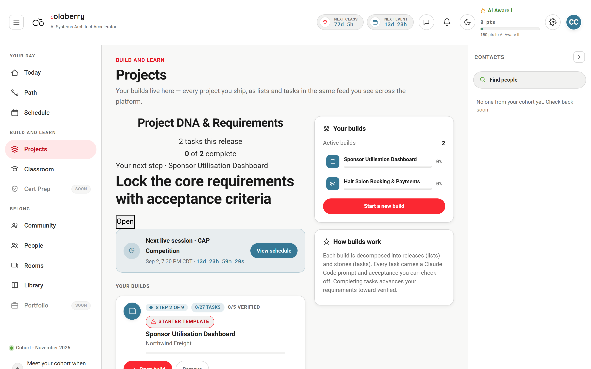
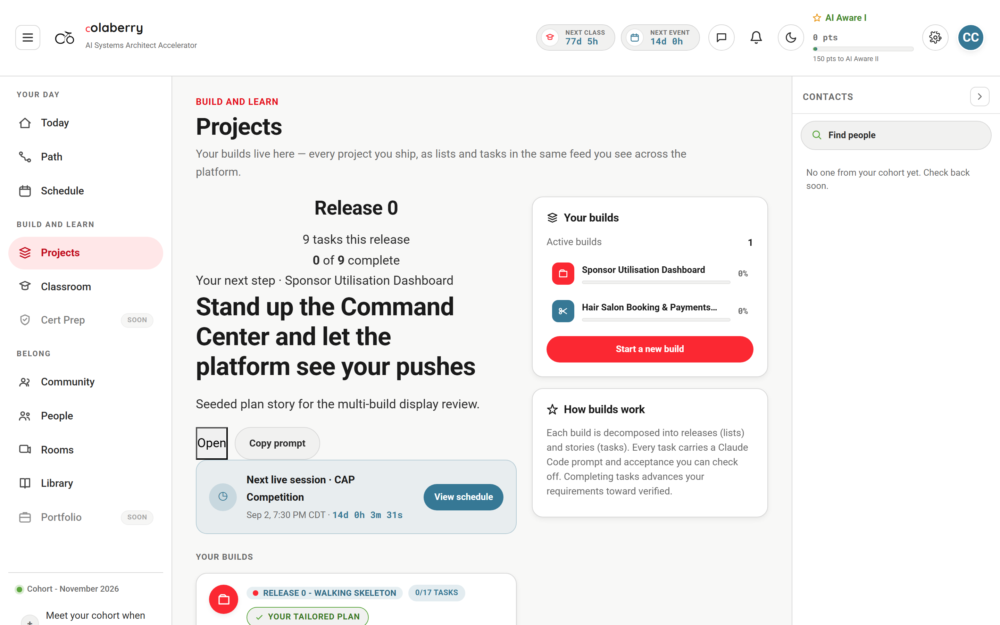
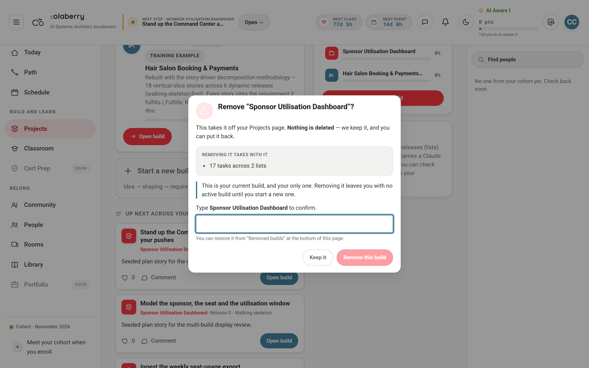

Three display defects on the student Projects page, all pre-existing on main, none
caused by PR #1635. Reproduced in a real browser on the dev instance, fixed, and re-walked.
Same throwaway account, same seeded plan — 17 stories across 2 releases — same page, same account state.
The only difference is the bundle: main on the left, this branch on the right.


example.Read out of the live DOM and out of localStorage at the end of each walk, not transcribed by hand.
| Measured | Before (main) | After (this branch) | Server truth |
|---|---|---|---|
| Origin chip on the card | starter template | your tailored plan | pipeline-generated |
origin in the store | local | pipeline | — |
| Tasks on the card | 27 | 17 | 17 |
| Releases on the card | 6 | 2 | 2 |
| “Active builds” stat | 2 | 1 | 1 |
| Training example labelled | no | yes | — |
The brief said the local template reuses the same STORY-NNN keyspace, so the merge was a
no-op. Reading generateSkeleton shows the opposite, and it changes the fix.
The template's tasks carry no storyId at all — they are minted as
id: '<localId>-t<n>' and nothing else. The two key sets are therefore wholly
disjoint, so adoptServerTasks did not find “nothing missing”; it found
everything missing and added the plan to the template instead of replacing it.
The card became the union, and the arithmetic is exactly what the browser pass measured:
| Release | Source | Tasks |
|---|---|---|
| Release 0 · Walking skeleton | server | 9 |
| Release 1 · Utilisation and alerts | server | 8 |
| Project DNA & Requirements | browser template | 2 |
| Core build | browser template | 4 |
| Reliability & polish | browser template | 2 |
| Showcase & portfolio | browser template | 2 |
| Total rendered | 27 | |
10 + 17 = 27, and 10 + 19 = 29 — the two numbers reported against published plans of 17 and 19 stories. The plan was on the card the whole time, buried under the template, mislabelled, and every count on the page ten too high.
claimBackendProject calls adoptServerIds, which re-keys the placeholder's
id to the server UUID at claim time — minutes before the plan exists. From that
moment reconcileProjects' matchIdx matches, so the supersede branch,
guarded by matchIdx < 0 && mirrorIdx < 0, is unreachable in exactly the case it was
written for. Reconcile falls through to overlay, and overlay adds rather than replaces.
// before — reachable only while the placeholder still had its p<epoch> id
if (matchIdx < 0 && mirrorIdx < 0) {
const claimIdx = local.findIndex((p) => !p.sample && p.pipelineProjectId === tree!.id);
if (claimIdx >= 0 && !hasCompletedWork(local[claimIdx])) { /* supersede */ }
}
// after — ask whether the row IS this plan, which is all ids can no longer answer
if (boundIdx >= 0
&& sharesNoTaskIdentity(local[boundIdx], tree!)
&& !hasCompletedWork(local[boundIdx])) {
next[boundIdx] = supersededBy(local[boundIdx], tree!);
return settle(next, true, 'supersede');
}A row sharing at least one task key with the tree is this plan — possibly stale, possibly missing a story — and is adopted or overlaid, never superseded. A row sharing nothing is the placeholder, and the plan supersedes it.
Two candidates were on the table: relax the supersede guard, or defer id adoption in
claimBackendProject.
Deferring id adoption was rejected on evidence. That side-car-only shape is the
defect the id-adoption fix removed. projectIdentity.ts records it: the placeholder id “stayed the
project's identity, went into the workspace route, and was rejected with a 400”, and the message surfaced
under whatever field the student happened to be touching — which is how a project-id rejection once read as
“your GitHub username is invalid”. projectsStore.idAdoption.test.ts pins that behaviour.
Reverting it would reintroduce a fixed production defect in order to fix a display one.
Relaxing the guard also puts the change where the ambiguity actually is. Identity is not the problem; deciding what a row is from identity alone was.
The repair is lossless by construction. The completed-work guard is kept, so the only rows it replaces are rows that share no task with the plan and have nothing ticked on them — rows with nothing to lose.
/workspace/:id URL still resolves.A test pins each of these.
read() re-seeds sample-salon whenever it is missing, so the array behind the page
always carries the training example. The stat rendered projects.length straight, which made it one
too high at every value.
| Student's real builds | Stat on main | Stat on this branch |
|---|---|---|
| 0 | 1 | 0 |
| 1 | 2 | 1 |
| 2 | 3 | 2 |
This is precisely the “Active builds: 2 while the API returned 1” report. It was never a stale cache — it was
a training fixture counted as a build the student owns. The example is still listed, because it is a worked
build a student can open and learn the shape from, but it now carries an example tag so it stops
reading as their own work.
The archive dialog reads every figure live from GET …/archive-preview — the server. The card
behind it read localStorage. On main that put two different descriptions of the same
build on one screen.

| Archive dialog says | Card behind it says | Agree? | |
|---|---|---|---|
| Before | 17 tasks across 2 lists | starter template · 27 tasks, 6 releases | no |
| After | 17 tasks across 2 lists | your tailored plan · 17 tasks, 2 releases | yes |
Both dialog readings above are identical because the dialog was right all along — it was reading the server, which always held 17 tasks in 2 lists. Only the card was wrong. Fixing D2 closed the gap with no second change; a test now pins the agreement so it cannot reopen.
reconcileProjects has exactly one production caller, and it is handed the
body of GET /api/portal/projects/active — one tree, singular by type and by
source. It can add at most one card per invocation.GET /api/portal/projects is reduced to
{known, ids[], activeId} — no name, no tasks, no counts, nothing renderable. It is consumed
only by pruneDeadProjects (removal) and as an ordering fallback.hydrateProjectById is the only path that can add a non-active
build, and it is reachable only from “Restore” on an archived project.GET /api/portal/projects is route-shadowed. projectRoutes.ts is
mounted ahead of projectsPortalRoutes.ts and wins, so listEnrollmentProjectsSummary
and toProjectSummaryDto are dead code for that path — and both the projectApiEnabled
flag gate and requireContentEntitlement('projects') are bypassed on it. This should be resolved
first; it is arguably a bug in its own right.fcce50ef-… is deliberately
not excluded from listProjectsForEnrollment, and it is invisible today only because
/active is the sole render source. A server-rendered list ships a second “Untitled project” card
to Ali's own account on day one.The cheapest correct first slice is not the unification. In reconcileFromBackend, for each
inventory id not already held locally, call the existing hydrateProjectById — a function that
already exists, is already exercised by the restore flow, is deliberately routed around
reconcileProjects so it cannot mis-assign activeId, and already refuses to overwrite
local state. Roughly 15 lines, leaving every pruneDeadProjects interlock untouched.
A card-shaped list DTO then becomes a payload optimisation rather than an architectural flip. It is the right unit — one tree is about 114 KB, so four builds is roughly 456 KB fetched and written into a localStorage budget of a few MB, and almost none of it is needed to draw a card.
The full unification touches projectHydrate.ts, 755 lines of incident-derived logic where every
one of pruneDeadProjects' six cases is a recorded near-miss, and it has no home for the optimistic
wizard placeholder during the minutes a plan takes to generate. It should be its own piece of work with its own
review, not a rider on a display fix.
main firstIn a separate base worktree detached at main, with the real assertion output:
● a project with a published server plan › MUST NOT render as the starter template
Expected: "pipeline"
Received: "local"
● a project with a published server plan › shows the SERVER plan, not the template
with the plan bolted onto it
Expected: not 27
● … › agrees with the server about how many tasks it has (what the archive dialog counts)
Expected: 17
Received: 27
● the "Active builds" counter › reads 1 when the student has one build
Expected: "1"
Received: "2"
● the "Active builds" counter › reads 2 when the student has two builds — the Quincy report
Expected: "2"
Received: "3"Four guard tests pass on main and still pass after: the qninying case (a
cached plan missing a story must be adopted, never superseded), an already-hydrated pipeline row
with a local completion the server has not granted, a client-built project round-tripped through the server,
and a student mid-build. Those pin behaviour the fix must not disturb — one of them caught a real regression in
an earlier cut of this change and forced the discriminator to be task identity rather than origin.
select current_database() → accelerator_dev1. The copied .env
carries DB_NAME=accelerator_prod on line 7 and a second
DATABASE_URL=…/accelerator_prod landmine on line 8; both were forced on the command line.pj-sb-tag (new in this commit) present in static/css/main.ebc71045.css and
static/js/885.ab6dcf44.chunk.js; absent from the main build, whose bundle hash
differs (main.0ed99da1.js vs main.8963e9fd.js).projectSync.mirrorToBackend pushes the local template up to
POST /api/portal/projects/import on every sync, which wrote template rows into the server and
drifted the fixture under the capture. Both walks were redone with that call aborted and the fixture reset,
so the before and after measure the same plan.pages/portal/projects: 22 suites, 291 tests, all passing. Full frontend:
1255 passing; the 2 failures reproduce identically on unmodified main and are untouched here.tsc --noEmit clean, exit 0, pinned TypeScript 5.7.3 — a bare
npx tsc resolves 4.9.5 in this repo and both invents and hides errors.